本文转载自：KMP算法（1）：如何理解KMP
背景
给定一个主串（以 S 代替）和模式串（以 P 代替），要求找出 P 在 S 中出现的位置，此即串的模式匹配问题。
Knuth-Morris-Pratt 算法（简称 KMP）是解决这一问题的常用算法之一，这个算法是由高德纳（Donald Ervin Knuth）和沃恩·普拉特在1974年构思，同年詹姆斯·H·莫里斯也独立地设计出该算法，最终三人于1977年联合发表。
在继续下面的内容之前，有必要在这里介绍下两个概念：真前缀 和 真后缀。
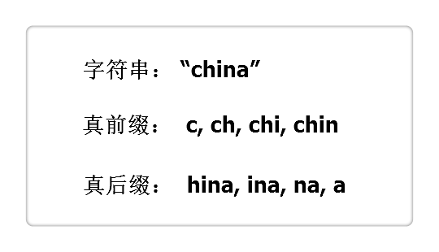
由上图所得， “真前缀”指除了自身以外，一个字符串的全部头部组合；”真后缀”指除了自身以外，一个字符串的全部尾部组合。（网上很多博客，应该说是几乎所有的博客，也包括我以前写的，都是“前缀”。严格来说，“真前缀”和“前缀”是不同的，既然不同，还是不要混为一谈的好！）
朴素字符串匹配算法
初遇串的模式匹配问题，我们脑海中的第一反应，就是朴素字符串匹配（即所谓的暴力匹配），代码如下：
1 | /* 字符串下标始于 0 */ |
暴力匹配的时间复杂度为 $O(nm)$，其中 $n$ 为 S 的长度，$m$ 为 P 的长度。很明显，这样的时间复杂度很难满足我们的需求。
接下来进入正题：时间复杂度为 $Θ(n+m)$ 的 KMP 算法。
KMP字符串匹配算法
算法流程
以下摘自阮一峰的字符串匹配的KMP算法，并作稍微修改。
（1）
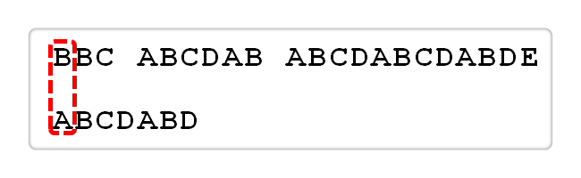
首先，主串”BBC ABCDAB ABCDABCDABDE”的第一个字符与模式串”ABCDABD”的第一个字符，进行比较。因为B与A不匹配，所以模式串后移一位。
（2）
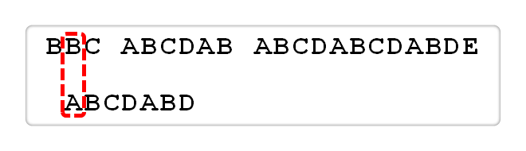
因为B与A又不匹配，模式串再往后移。
（3）
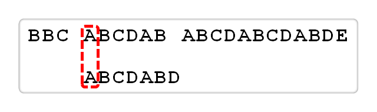
就这样，直到主串有一个字符，与模式串的第一个字符相同为止。
（4）
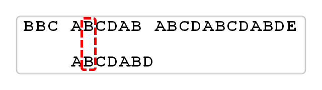
接着比较主串和模式串的下一个字符，还是相同。
（5）

直到主串有一个字符，与模式串对应的字符不相同为止。
（6）
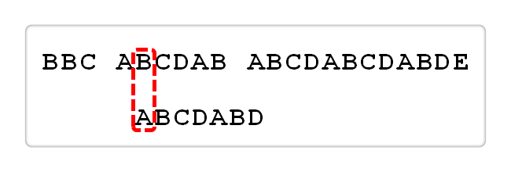
这时，最自然的反应是，将模式串整个后移一位，再从头逐个比较。这样做虽然可行，但是效率很差，因为你要把”搜索位置”移到已经比较过的位置，重比一遍。
（7）
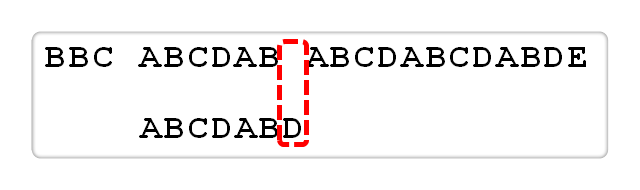
一个基本事实是，当空格与D不匹配时，你其实是已经知道前面六个字符是”ABCDAB”。KMP算法的想法是，设法利用这个已知信息，不要把”搜索位置”移回已经比较过的位置，而是继续把它向后移，这样就提高了效率。
（8）
| i | 0 | 1 | 2 | 3 | 4 | 5 | 6 | 7 |
|---|---|---|---|---|---|---|---|---|
| 模式串 | A | B | C | D | A | B | D | ‘\0’ |
| next[i] | -1 | 0 | 0 | 0 | 0 | 1 | 2 | 0 |
怎么做到这一点呢？可以针对模式串，设置一个跳转数组int next[]，这个数组是怎么计算出来的，后面再介绍，这里只要会用就可以了。
（9）

已知空格与D不匹配时，前面六个字符”ABCDAB”是匹配的。根据跳转数组可知，不匹配处D的next值为2，因此接下来从模式串下标为2的位置开始匹配。
（10）
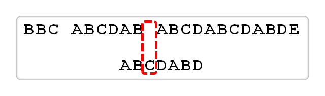
因为空格与Ｃ不匹配，C处的next值为0，因此接下来模式串从下标为0处开始匹配。
（11）
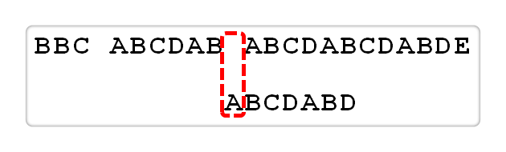
因为空格与A不匹配，此处next值为-1，表示模式串的第一个字符就不匹配，那么直接往后移一位。
（12）
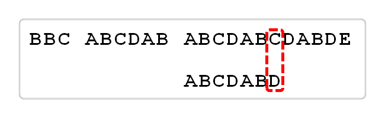
逐位比较，直到发现C与D不匹配。于是，下一步从下标为2的地方开始匹配。
（13）
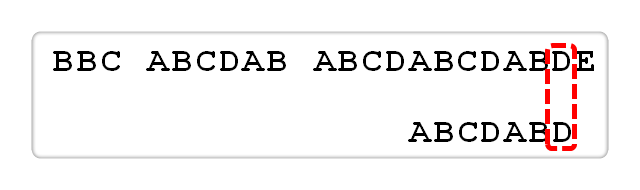
逐位比较，直到模式串的最后一位，发现完全匹配，于是搜索完成。
next数组是如何求出的
next数组的求解基于“真前缀”和“真后缀”，即next[i]等于P[0]...P[i - 1]最长的相同真前后缀的长度（请暂时忽视i等于0时的情况，下面会有解释）。我们依旧以上述的表格为例，为了方便阅读，我复制在下方了。
| i | 0 | 1 | 2 | 3 | 4 | 5 | 6 | 7 |
|---|---|---|---|---|---|---|---|---|
| 模式串 | A | B | C | D | A | B | D | ‘\0’ |
| next[ i ] | -1 | 0 | 0 | 0 | 0 | 1 | 2 | 0 |
- i = 0，对于模式串的首字符，我们统一为
next[0] = -1； - i = 1，前面的字符串为
A，其最长相同真前后缀长度为0，即next[1] = 0； - i = 2，前面的字符串为
AB，其最长相同真前后缀长度为0，即next[2] = 0； - i = 3，前面的字符串为
ABC，其最长相同真前后缀长度为0，即next[3] = 0； - i = 4，前面的字符串为
ABCD，其最长相同真前后缀长度为0，即next[4] = 0； - i = 5，前面的字符串为
ABCDA，其最长相同真前后缀为A，即next[5] = 1； - i = 6，前面的字符串为
ABCDAB，其最长相同真前后缀为AB，即next[6] = 2； - i = 7，前面的字符串为
ABCDABD，其最长相同真前后缀长度为0，即next[7] = 0。
那么，为什么根据最长相同真前后缀的长度就可以实现在不匹配情况下的跳转呢？举个代表性的例子：假如i = 6时不匹配，此时我们是知道其位置前的字符串为ABCDAB，仔细观察这个字符串，首尾都有一个AB，既然在i = 6处的D不匹配，我们为何不直接把i = 2处的C拿过来继续比较呢，因为都有一个AB啊，而这个AB就是ABCDAB的最长相同真前后缀，其长度2正好是跳转的下标位置。
有的读者可能存在疑问，若在i = 5时匹配失败，按照我讲解的思路，此时应该把i = 1处的字符拿过来继续比较，但是这两个位置的字符是一样的啊，都是B，既然一样，拿过来比较不就是无用功了么？其实不是我讲解的有问题，也不是这个算法有问题，而是这个算法还未优化，关于这个问题在下面会详细说明，不过建议读者不要在这里纠结，跳过这个，下面你自然会恍然大悟。
思路如此简单，接下来就是代码实现了，如下：
1 | /* P 为模式串，下标从 0 开始 */ |
一脸懵逼，是不是。。。上述代码就是用来求解模式串中每个位置的next[]值。
下面具体分析，我把代码分为两部分来讲：
（1）：i和j的作用是什么？
i和j就像是两个”指针“，一前一后，通过移动它们来找到最长的相同真前后缀。
（2）：if…else…语句里做了什么？

假设i和j的位置如上图，由next[i] = j得，也就是对于位置i来说，区段[0, i - 1]的最长相同真前后缀分别是[0, j - 1]和[i - j, i - 1]，即这两区段内容相同。
按照算法流程，if (P[i] == P[j])，则i++; j++; next[i] = j;；若不等，则j = next[j]，见下图：

next[j]代表[0, j - 1]区段中最长相同真前后缀的长度。如图，用左侧两个椭圆来表示这个最长相同真前后缀，即这两个椭圆代表的区段内容相同；同理，右侧也有相同的两个椭圆。所以else语句就是利用第一个椭圆和第四个椭圆内容相同来加快得到[0, i - 1]区段的相同真前后缀的长度。
细心的朋友会问if语句中j == -1存在的意义是何？第一，程序刚运行时，j是被初始为-1，直接进行P[i] == P[j]判断无疑会边界溢出；第二，else语句中j = next[j]，j是不断后退的，若j在后退中被赋值为-1（也就是j = next[0]），在P[i] == P[j]判断也会边界溢出。综上两点，其意义就是为了特殊边界判断。
完整代码
1 |
|
KMP优化
| i | 0 | 1 | 2 | 3 | 4 | 5 | 6 | 7 |
|---|---|---|---|---|---|---|---|---|
| 模式串 | A | B | C | D | A | B | D | ‘\0’ |
| next[ i ] | -1 | 0 | 0 | 0 | 0 | 1 | 2 | 0 |
以3.2的表格为例（已复制在上方），若在i = 5时匹配失败，按照3.2的代码，此时应该把i = 1处的字符拿过来继续比较，但是这两个位置的字符是一样的，都是B，既然一样，拿过来比较不就是无用功了么？这我在3.2已经解释过，之所以会这样是因为KMP不够完美。那怎么改写代码就可以解决这个问题呢？很简单。
1 | /* P 为模式串，下标从 0 开始 */ |
在此也给各位读者提个醒，KMP算法严格来说分为KMP算法（未优化版）和KMP算法（优化版），所以建议读者在表述KMP算法时，最好告知你的版本，因为两者在某些情况下区别很大，这里简单说下。
KMP算法（未优化版）： next数组表示最长的相同真前后缀的长度，我们不仅可以利用next来解决模式串的匹配问题，也可以用来解决类似字符串重复问题等等，这类问题大家可以在各大OJ找到，这里不作过多表述。
KMP算法（优化版）： 根据代码很容易知道（名称也改为了nextval），优化后的next仅仅表示相同真前后缀的长度，但不一定是最长（称其为“最优相同真前后缀”更为恰当）。此时我们利用优化后的next可以在模式串匹配问题中以更快的速度得到我们的答案（相较于未优化版），但是上述所说的字符串重复问题，优化版本则束手无策。
所以，该采用哪个版本，取决于你在现实中遇到的实际问题。
参考文献
- 严蔚敏. 数据结构（C语言版）
- 阮一峰. 字符串匹配的KMP算法